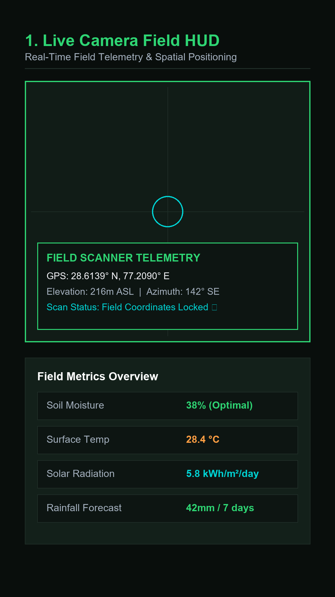
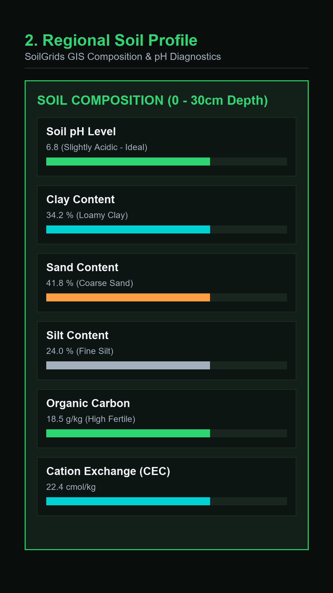
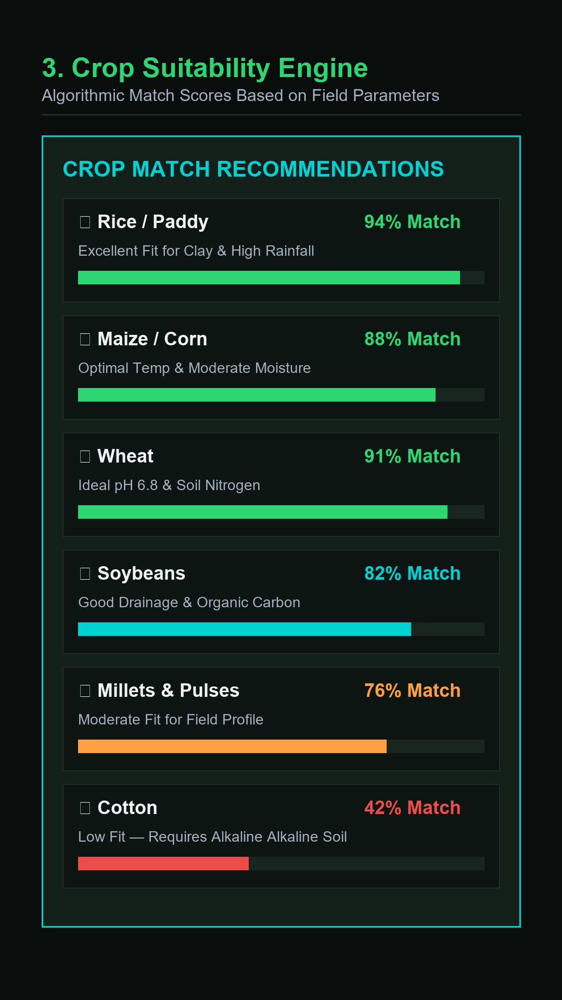
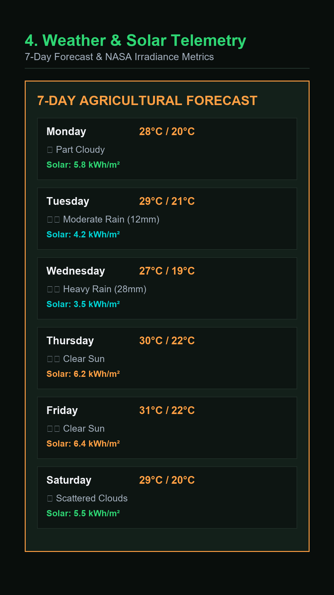

CropAI reads your GPS location and pulls regional soil, weather, and solar data on the spot — then recommends the crop that fits, right over a live camera view of your field.




No lab kit, no waiting. CropAI queries public agricultural datasets for exactly where you're standing.
A real-time camera view with a floating data card overlay — soil, weather, and crop fit, at a glance.
Soil pH, texture, and carbon; 7-day rainfall and temperature; solar irradiance — all pulled for your exact spot.
An algorithmic match against soil and climate conditions, with the reasoning shown, not just a name.
Scans save to your device immediately. No signal, no problem — everything syncs when you're back online.
Register with your phone number + PIN to access the field scanner and enable automatic cloud backups for restore.
A cached map view of your saved scan locations, viewable without a connection.
Generate a shareable PDF field summary or a CSV log of every scan you've saved.
English, Hindi, Punjabi, Marathi, Telugu, Tamil, French, and Spanish.
Point your phone at the field. CropAI shows a live scanning overlay while it works.
GPS coordinates (or a manually entered lat/lon) anchor every data query to that spot.
Regional soil, 7-day weather, and solar data populate the HUD card in seconds.
Keep the scan locally, back it up to your account, or export a PDF/CSV report.